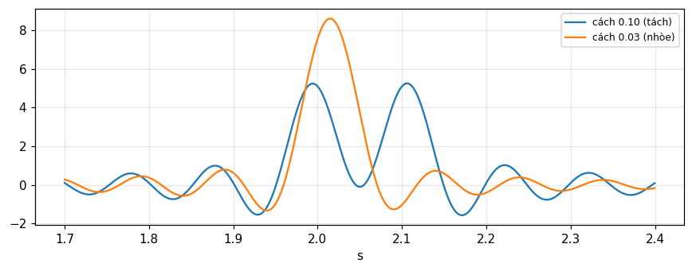

Tính biến đổi bằng tích phân dạng đóng cho xung chữ nhật, hàm bậc thang, chuỗi xung, e^{-|x|}, Gauss, 1/x và \text{sgn}\,x.
Viết và kiểm tra chương trình biến đổi Fourier "chậm", chọn K, X và hiểu vì sao dữ liệu hữu hạn cho sai số chồng phổ.
Sinh biến đổi mới từ định lý tích chập và định lý đạo hàm (quy về xung).
Hiểu nguyên lý đo phổ: máy phân tích tần số vô tuyến và quang phổ biến đổi Fourier.
Kiểm tra kết quả bằng số ngay cả khi làm đại số bằng tay.
Dùng nút, chấm tròn hoặc phím ← → để chuyển slide.
PHẦN 1/5
01
Tích phân dạng đóng
Bối cảnh: Các cặp biến đổi ở chương trước được nêu mà không chứng minh, và chỉ nói "kiểm được bằng tích phân Fourier".
Vướng mắc: Muốn tạo cặp mới thì cần các cách thực hiện phép biến đổi, và cách trực tiếp nhất là tính tích phân.
Giải pháp: Hàm bằng 0 ở nhiều đoạn và đơn giản ở đoạn còn lại thì tích phân làm được; các hàm khác cần mẹo (hoàn thiện bình phương, tích phân đường, chuỗi giới hạn).
Bản đồ các cách lấy biến đổi
Hàm chữ nhật, bậc thang, xung
e^{-|x|}, Gauss, 1/x, \text{sgn}\,x
1/5 · Tích phân dạng đóng
Vì sao cần chương này
Nhiều chuỗi lập luận dùng biến đổi Fourier không cần biết cặp cụ thể nào, nhưng làm lập luận tổng quát với một ví dụ trong đầu thường là cách bảo hiểm trước bất ngờ (Bracewell, tr. 136). Các cặp đã dùng để minh họa định lý đều được nêu không chứng minh, nên chưa giúp khi cần tạo cặp mới. Chương này xét các cách thực hiện phép biến đổi.
1/5 · Tích phân dạng đóng
Bốn con đường
Tính tích phân \int f(x)e^{-i2\pi xs}dx trực tiếp (dạng đóng).
Biến đổi số: cộng thay tích phân, gồm cả chương trình "chậm" ngắn và FFT (chương 11).
Sinh từ các định lý cơ bản bắt đầu từ vài cặp đã biết.
Tra bảng.
Sách chú ý rằng vài lớp hàm sẽ không bao giờ đến được bằng định lý, nhưng nhiều hàm khả thi về vật lý thì đến được (tr. 137).
1/5 · Tích phân dạng đóng
Xung chữ nhật
Khi f(x)=\Pi(x), biến đổi chỉ là tích phân của cosin trên [-\tfrac12,\tfrac12] (Bracewell, tr. 137):
Tại s=0.3: 0.8584 bằng cả tích phân số và công thức.
1/5 · Tích phân dạng đóng
Hàm bậc thang: tổng các xung chữ nhật
Nếu f khác 0 trên nhiều đoạn và hằng trong mỗi đoạn thì cũng tích phân được. Với f(x)=\sum a_n\Pi\!\left(\frac{x-b_n}{c_n}\right), dịch và tỉ lệ cho F(s)=\sum a_nc_ne^{-i2\pi b_ns}\,\text{sinc}\,c_ns (tr. 137). Những hàm này gồm cả bậc thang và tín hiệu điện báo Morse, và mô phỏng được mọi kiểu biến thiên với độ chính xác tùy ý (tr. 138). Số đo với ba xung (a,b,c)=(1,0,2),(0.5,3,1),(-1,-2,1) tại s=0.3: phần thực 2.0508, phần ảo 0.7568.
Trường hợp còn đơn giản hơn là f bằng 0 hầu khắp nơi: f(x)=\sum a_n\delta(x-b_n). Chỉ giá trị a_n\exp(-i2\pi xs) tại x=b_n có ý nghĩa, và theo định lý sàng lọc F(s)=\sum a_ne^{-i2\pi b_ns} (tr. 138). Số đo: mô phỏng ba xung (a,b)=(2,-1),(-1,0.5),(0.5,2) bằng chữ nhật hẹp 10^{-3} cho độ lớn 3.4093 tại s=0.3, đúng tổng mũ.
1/5 · Tích phân dạng đóng
Khi không có quy tắc chung: ví dụ e^{-|x|}
Nếu f có dạng hàm đặc biệt thì có thể tích phân được nhưng không có quy tắc chung (tr. 138). Với f=e^{-|x|}, F(s)=2\int_0^\infty e^{-x}\cos2\pi xs\,dx=2\,\text{Re}\,\dfrac{1}{1+i2\pi s}:
Biến đổi của e^{-|x|}
F(s)=\frac{2}{1+4\pi^2s^2}
Tại s=0.3: 0.4393 theo tích phân số, theo phần thực và theo công thức.
1/5 · Tích phân dạng đóng
Gauss: hoàn thiện bình phương
Với f=e^{-\pi x^2}, viết \pi x^2+i2\pi xs=\pi(x+is)^2+\pi s^2, rút e^{-\pi s^2} ra ngoài, rồi dùng kết quả đã biết rằng tích phân vô hạn của \exp(-\pi u^2) bằng 1 (tr. 139). Kết quả e^{-\pi s^2} = 0.7537 tại s=0.3, khớp tích phân số phức.
1/5 · Tích phân dạng đóng
1/x: tích phân đường bán nguyệt
Độ gián đoạn vô hạn ở gốc làm tích phân Fourier chuẩn phân kỳ, nên xét giới hạn với đoạn (-\epsilon,\epsilon) bị bỏ. Ta dùng đường bán nguyệt bán kính R có chỗ lõm nhỏ bán kính \epsilon tại gốc, không bao điểm cực nào nên tích phân đường bằng 0. Khi R\to\infty tích phân thứ tư triệt tiêu, còn tích phân trên cung nhỏ bằng \pm i\pi tùy dấu s; kết quả trong giới hạn là (tr. 139):
Cặp trong giới hạn
\frac1x\ \supset\ -i\pi\,\operatorname{sgn}s
Số đo: cắt ở |x|\le10^4 thì phần ảo của \int\sin là -3.141 tại s=0.3, đúng -\pi.
1/5 · Tích phân dạng đóng
\text{sgn}\,x: dãy hàm tiến về giới hạn
Đây là ví dụ trước ngược lại: tích phân Fourier không tồn tại theo nghĩa chuẩn vì hàm không khả tích tuyệt đối. Xét dãy \exp(-\tau|x|)\text{sgn}\,x khi \tau\to0; biến đổi là \dfrac1{\tau+i2\pi s}-\dfrac1{\tau-i2\pi s}, tiến về 1/i\pi s (tr. 140). Số đo với \tau=10^{-3}, s=0.3: khác giới hạn chỉ 3.0e-07.
Cặp trong giới hạn
\operatorname{sgn}x\ \supset\ \frac{1}{i\pi s}
1/5 · Tích phân dạng đóng
Tự kiểm tra phần 1
Biến đổi của \sum a_n\Pi[(x-b_n)/c_n] là gì?
Vì sao \text{sgn}\,x cần dãy giới hạn?
Bước hoàn thiện bình phương cho Gauss cần biết kết quả gì?
Gợi ý: \sum a_nc_ne^{-i2\pi b_ns}\text{sinc}\,c_ns; vì không khả tích tuyệt đối; tích phân của e^{-\pi u^2} bằng 1.
PHẦN 2/5
02
Biến đổi số và giới hạn của dữ liệu thật
Bối cảnh: Dữ liệu đo được cho ở các giá trị rời rạc của biến độc lập, trên một khoảng hữu hạn, và có sai số.
Vướng mắc: Những hạn chế đó quyết định tần số cao nhất, bước tần số nhỏ nhất và số chữ số thập phân có ý nghĩa.
Giải pháp: Bậc tự do bằng 2X/\Delta x; tần số tối đa 1/2\Delta x; bước \Delta s=1/2X.
Giới hạn: tần số tối đa, bước tần số, bậc tự do
Chương trình biến đổi Fourier chậm
Các ví dụ số và sai số chồng phổ
2/5 · Biến đổi số và giới hạn của dữ liệu thật
Ba hạn chế của dữ liệu
Dữ liệu cách nhau \Delta x: thành phần Fourier có chu kỳ ngắn hơn 2\Delta x hầu như không có thông tin, nên chỉ cần tính tới khoảng (2\Delta x)^{-1}.
Dữ liệu chỉ cho trong -X<x<X: không cần tính F(s) ở các điểm gần nhau hơn \Delta s=(2X)^{-1}.
Dữ liệu có sai số: phổ công suất của sai số đặt giới hạn cho số chữ số thập phân có ý nghĩa.
Đó là Bracewell, tr. 140 đến 141. Nếu chi tiết mịn của F(s) cần bước nhỏ hơn (2X)^{-1} thì phải mở rộng đo f(x) vượt quá x=X.
2/5 · Biến đổi số và giới hạn của dữ liệu thật
Bậc tự do
Hàm f(x) lập bảng ở khoảng \Delta x trên đoạn 2X có 2X/\Delta x bậc tự do, và số này phải tương đương với số dữ liệu tính cho biến đổi (tr. 140; chương 10 và 14 khai thác kỹ). Ví dụ \Delta x=1, X=6: 12 bậc tự do, tần số tối đa 0.5, bước tần số 0.0833.
Giả sử f(x) biểu diễn bằng giá trị tại x=n, n=-X\ldots X. Trước khi biến đổi ta cần giả định về hành vi ngoài khoảng đo: giả sử f=0 khi |x|>X. Khi đó tổng \sum_{-X}^{X}f(n)e^{-i2\pi sn} xấp xỉ F(s); phần thực và ảo cho hai tổng riêng C=\sum f(n)\cos2\pi sn và S=\sum f(n)\sin2\pi sn (tr. 141), với F=C-iS. Mỗi giá trị s cần 2X+1 số hạng nên tính khá nhiều, nhờ đối xứng có thể chỉ cộng từ 0 tới X.
2/5 · Biến đổi số và giới hạn của dữ liệu thật
Cooley và Tukey, Lanczos và Gauss
Giữa những năm sáu mươi, cộng đồng xử lý tín hiệu bị ảnh hưởng sâu sắc bởi Cooley và Tukey (1965): chia tập dữ liệu làm hai, biến đổi riêng rồi ghép, công việc giảm gần một nửa, và chia nhỏ tiếp còn tốt hơn. Lanczos đã công bố việc này năm 1942, và Gauss dùng ý đó năm 1805 khi phân tích số liệu sao chổi. Sau vài năm, tên "thuật toán Cooley-Tukey" được đổi thành FFT (tr. 141).
2/5 · Biến đổi số và giới hạn của dữ liệu thật
Một lệnh cho FFT, nhưng "hộp đen" cần hiểu
Một câu lệnh MATLAB F=\text{fft}(f) cho biến đổi phức của một dãy ngay lập tức, dù số phần tử có ước số, là số nguyên tố hay lũy thừa của 2 (tr. 142). Notebook kiểm cả trường hợp chiều dài 13 (nguyên tố): FFT so với tổng chậm lệch tối đa 5.5e-15. Sách cảnh báo rằng không thể tiếp cận rương hộp đen một cách an toàn nếu không hiểu bên trong; nhiều sinh viên chạy gói FFT quá sớm rồi thắc mắc vì dữ liệu chữ nhật không ra hình sinc như mong đợi (tr. 142).
2/5 · Biến đổi số và giới hạn của dữ liệu thật
Vì sao vẫn dùng biến đổi "chậm"
Tốc độ máy tính tăng làm tổng trực tiếp đủ nhanh cho nhiều việc.
Sinh viên làm số trước khi gặp các chi tiết tinh vi của thuật toán nhanh.
Kiểm các mục trong Từ điển hình ảnh và làm quen định lý.
Bắt lỗi dấu hoặc hệ số 2 hay \pi khi làm đại số bằng tay, nhanh hơn lặp lại suy dẫn cẩn thận.
Theo Bracewell, tr. 142. Biến đổi Hartley (chương 12) cũng đạt mọi mục đích và cho ra kết quả thực với dữ liệu thực.
2/5 · Biến đổi số và giới hạn của dữ liệu thật
Chương trình biến đổi chậm
Cho f(x) tại các số nguyên x=-X\ldots X (đổi thang nếu cần). Vì phần thực và ảo không rơi vào s nguyên, dùng chỉ số k chạy 0 tới K với s=k/2K; tần số tối đa 0.5. Với mỗi k, cộng f(x)\cos(2\pi sx) và f(x)\sin(2\pi sx) trên mọi x (tr. 142 đến 143). Chỉ cần k\ge0 vì với k âm biến đổi là liên hợp phức (hình dạng "nửa thời gian" so với FFT). Kiểm thô: R(0) bằng tổng dữ liệu và I(0)=0.
Với K=X ta được X+1 giá trị R và X giá trị I (không đếm I(0)=0), tổng bằng đúng số hằng độc lập 2X+1 mà dữ liệu biện minh; bước 1/2X gọi là khoảng cách tới hạn. Số đo: từ R,I này dựng lại dữ liệu ban đầu lệch 2.2e-16. K=4X chèn thêm điểm nội suy làm đồ thị mịn hơn mà không thêm thông tin; k chạy 0 tới X/2 thì bước lớn gấp đôi, hợp cho gỡ lỗi. Cho k từ 5X tới 7X với K=12X ta soi dải quanh s=0.25 với độ phân giải gấp 12 lần tới hạn (\Delta s=1/24X); sự linh hoạt này các thuật toán nhanh chuẩn không có (tr. 143). Số đo: 13 điểm tại bước 0.00694, lệch so với FFT đệm 0 chỉ 4.8e-15.
2/5 · Biến đổi số và giới hạn của dữ liệu thật
Tự kiểm tra phần 2
Dữ liệu cách 1 trên đoạn [-6,6]: tần số tối đa và bước tần số?
Vì sao chọn K=X là đủ để dựng lại dữ liệu?
Điều gì xảy ra nếu tăng K lên 4X?
Gợi ý: 0.5 và 1/12; vì R và I cho đúng 2X+1 hằng độc lập; thêm điểm nội suy mà không thêm thông tin.
PHẦN 3/5
03
Ví dụ số và sai số chồng phổ
Bối cảnh: Muốn tin chương trình, ta thử với dữ liệu có đáp số biết trước: xung chữ nhật \Pi(x/12) có biến đổi 12\,\text{sinc}\,12s.
Vướng mắc: Kết quả có khớp không, và nếu lệch thì lệch vì đâu?
Giải pháp: Lệch chủ yếu do sự chồng phổ của các bản sao 12\,\text{sinc}\,12(s-n), và tăng mật độ dữ liệu làm giảm lệch tương đối.
Ví dụ: 13 giá trị, K=12
K=24, đệm 0, dữ liệu dày gấp đôi
Chồng phổ: R(s)=\sin12\pi s\cot\pi s
3/5 · Ví dụ số và sai số chồng phổ
Dữ liệu ví dụ
Dữ liệu vào là 13 giá trị f(x)=\Pi(x/12) tại x=-6\ldots6: 11 giá trị 1 ở giữa và hai giá trị \tfrac12 ở hai đầu (tại chỗ gián đoạn lấy trung bình). Tổng bằng 12 nên R(0)=12, đúng F(0). Chọn K=2X=12 ta có bước tần số bằng một nửa khoảng cách tới hạn (tr. 144).
3/5 · Ví dụ số và sai số chồng phổ
Kết quả với K=12
Vì f chẵn nên mọi I(k) bằng không. Các giá trị R(k): R(1) = 7.596, R(3) = -2.414, R(5) = 1.303, R(11) = -0.132, còn các R(k) chỉ số chẵn k\ge2 bằng 0 (tr. 144). So với 12\,\text{sinc}\,12s=7.639 tại s=1/24, R(1) lệch -0.57 phần trăm.
Hình 1. Chương trình chậm với 13 giá trị chữ nhật và K = 12: các điểm R(k) nằm trên đường đỏ (tổng các bản sao), hơi lệch khỏi 12 sinc 12s (xanh) vì bản sao 12 sinc 12(s−1) chồng lên; ở s = 1 R quay về 12.
3/5 · Ví dụ số và sai số chồng phổ
K=24: bước nhỏ một phần tư tới hạn
Giữ dữ liệu như cũ và chọn K=24: các giá trị tại tần số cũ giữ nguyên, các tần số xen kẽ cho đồ thị mượt hơn (tr. 144). R(1) = 10.788 và R(3) = 3.555 là hai giá trị xen kẽ mới, còn R(2) = 7.596 trùng R(1) của lần trước (s=1/24).
3/5 · Ví dụ số và sai số chồng phổ
Đệm số 0 không đổi biến đổi
Đổi X thành 12 và đệm dữ liệu gốc thành 25 giá trị bằng số 0 ở hai đầu, giữ K=24: các giá trị biến đổi không đổi (tr. 144). Thật vậy, số hạng thêm vào đều bằng 0. Số đo: lệch tối đa giữa hai tính là 0.
3/5 · Ví dụ số và sai số chồng phổ
Dữ liệu dày gấp đôi: \Pi(x/24)
Giữ X=12 nhưng dùng 25 giá trị bắt đầu và kết thúc bằng \tfrac12, ở giữa 23 số 1 (tương đương \Pi(x/24), biến đổi 24\,\text{sinc}\,24s), giữ K=24 (tr. 144). Khi đó R(1) = 15.257; sai khác với 24\,\text{sinc}\,0.5 chỉ còn -0.14 phần trăm, cải thiện 4 lần so với ví dụ đầu.
3/5 · Ví dụ số và sai số chồng phổ
Sai số tuyệt đối không giảm theo k
Bracewell nhắc kiểm rằng sai số tuyệt đối không giảm khi k tăng (tr. 144). Nguyên nhân sẽ rõ ở slide sau: sai số có dạng \sin(2\pi Xs)\left[\cot\pi s-\frac1{\pi s}\right], biên độ |\cot\pi s-1/\pi s| không phụ thuộc X, chẳng hạn bằng 0.2732 tại s=0.25. Vì thế tăng mật độ dữ liệu làm tín hiệu cao lên X lần còn sai số giữ nguyên biên độ, nên sai số tương đối giảm.
3/5 · Ví dụ số và sai số chồng phổ
Nguồn gốc lệch: chồng phổ các bản sao
Cho k chạy tới 2K thì s tới 1.0 và R trở lại đúng giá trị tại s=0 (tr. 144). Sự lệch so với 12\,\text{sinc}\,12s chủ yếu do bản sao 12\,\text{sinc}\,12(s-1) chồng lên, và tổng quát giá trị thật của R là \sum_n12\,\text{sinc}\,12(s-n). Số đo: R tại s=1 là 12; tổng cắt |n|\le20000 tại s=1/24 là 7.596, bằng R(1) 7.596 ở trên.
Bản sao cộng lại
R(s)=\sum_{n=-\infty}^{\infty}12\operatorname{sinc}12(s-n)=\sin 12\pi s\,\cot\pi s
3/5 · Ví dụ số và sai số chồng phổ
Bài học: pha phụ thuộc gốc, công suất thì không
Với nhiều dạng sóng, việc chọn gốc không quan trọng vì dạng sóng không phụ thuộc thời điểm chọn làm gốc. Phần thực và ảo bị ảnh hưởng nhiều bởi lựa chọn gốc, nên không được cần đến thường xuyên; thay vào đó R^2+I^2 là tính chất nội tại của dạng sóng, và pha \arctan(I/R) chỉ đổi một độ dịch tuyến tính theo tần số khi đổi gốc (tr. 143). Số đo: dời gốc dữ liệu chữ nhật đi 3 đơn vị giữ R^2+I^2 ở s=0.1 là 3.273 (không đổi) và thêm pha -108 độ.
3/5 · Ví dụ số và sai số chồng phổ
Tự kiểm tra phần 3
Vì sao R(0)=12 trong ví dụ?
Đệm số 0 có đổi F(s) không?
Vì sao dữ liệu dày hơn cải thiện sai số tương đối nhưng không cải thiện biên độ sai số tuyệt đối?
Gợi ý: tổng dữ liệu bằng F(0); không; sai số là chồng phổ có biên độ độc lập X.
PHẦN 4/5
04
Sinh biến đổi từ các định lý
Bối cảnh: Chỉ cần vài cặp là ta sinh được cả một từ điển biến đổi bằng định lý.
Vướng mắc: Hàm đa giác, hàm chia đoạn tuyến tính hoặc đa thức có thể quy về xung bằng cách đạo hàm liên tiếp.
Giải pháp: Tích chập với xung và định lý đạo hàm là hai công cụ chính; hằng số tích phân được xác định từ diện tích và ràng buộc khác.
Tích chập với xung: hàm đa giác
Đạo hàm liên tiếp tới xung
Xung parabol (1-x^2)\Pi(x/2)
4/5 · Sinh biến đổi từ các định lý
Nguyên tắc
Nhiều hàm, nhất là trong lý thuyết, biến đổi được nếu nhận ra một tính chất cho phép dùng một định lý (Bracewell, tr. 145). Định lý thường có dạng "nếu f và F là cặp thì g và G cũng vậy", nên từ cặp đã biết sinh ra cặp mới.
4/5 · Sinh biến đổi từ các định lý
Hàm đa giác = tam giác * tập xung
Nếu nhận ra hàm đa giác là tích chập của hàm tam giác và một tập xung, ta xử lý xung như trên rồi nhân với biến đổi của tam giác (hình 7.1, tr. 145):
Ví dụ: \Lambda(x)*\mu(x), với \mu(x)=\tfrac12\delta(x+\tfrac12)+\tfrac12\delta(x-\tfrac12), là xung hình thang có biến đổi \text{sinc}^2s\cos\pi s (tr. 145). Tại s=0.3 tích phân số và công thức đều cho 0.4331.
4/5 · Sinh biến đổi từ các định lý
Đạo hàm liên tiếp cho hàm đoạn tuyến tính
Có một cách dùng đặc biệt của định lý đạo hàm hay dùng cho dạng sóng chuyển mạch. Với hàm đoạn tuyến tính, đạo hàm bậc nhất có chứa xung; ta tách xung, đạo hàm lần nữa (hình 7.2, tr. 146), và chỉ còn tập xung \sum C_n\delta(x-c_n). Nếu đạo hàm bậc nhất còn chứa \sum B_n\delta(x-b_n) và hàm gốc chứa \sum A_n\delta(x-a_n) thì (tr. 146):
Thí dụ đơn giản nhất: \Lambda''(x)=\delta(x+1)-2\delta(x)+\delta(x-1), biến đổi 2\cos2\pi s-2=-4\sin^2\pi s. Chia cho (i2\pi s)^2 cho \text{sinc}^2s đúng như biết. Số đo tại s=0.3: lệch 0.0e+00 so với \text{sinc}^2(0.3).
4/5 · Sinh biến đổi từ các định lý
Xung parabol: đạo hàm hai lần
Xét f(x)=(1-x^2)\Pi(x/2). Đạo hàm một lần cho -2x\,\Pi(x/2) (không có xung vì f liên tục tại \pm1, do f(\pm1)=0). Đạo hàm lần hai cho 2\delta(x+1)-2\Pi(x/2)+2\delta(x-1), có biến đổi 4\cos2\pi s-4\,\text{sinc}\,2s (tr. 146 đến 147). Tại s=0.3 vế này là -3.254; nhân F(0.3) tính bằng tích phân với (i2\pi s)^2 cho cùng số.
4/5 · Sinh biến đổi từ các định lý
Hằng số tích phân
Chia cho (i2\pi s)^2 ta được F(s)=\dfrac{4\cos2\pi s-4\,\text{sinc}\,2s}{(i2\pi s)^2}+K_1\delta(s)+K_2\delta'(s), với K_1 và K_2 là hằng số tích phân, vì có thể cộng hằng số hoặc dốc tuyến tính vào f mà không đổi đạo hàm bậc hai. Tích phân xung parabol cho thấy không có hằng số cộng hay dốc, nên K_1=K_2=0 (tr. 147):
Tại s=0.3: 0.9159. Giới hạn s\to0 là 1.3333, bằng diện tích \int(1-x^2)dx=\tfrac43.
4/5 · Sinh biến đổi từ các định lý
Đơn giản hóa: khi nào áp dụng cách nào
Hàm
Cách
Nhiều đoạn hằng
Tổng chữ nhật, tr. 137
Tập xung
Sàng lọc, tr. 138
Đa giác
Tam giác * xung, tr. 145
Đoạn tuyến tính hoặc đa thức
Đạo hàm liên tiếp, tr. 145 đến 147
Gauss, mũ
Hoàn thiện bình phương, tr. 139
Gián đoạn vô hạn
Tích phân đường hoặc dãy giới hạn, tr. 139 đến 140
4/5 · Sinh biến đổi từ các định lý
Tự kiểm tra phần 4
Vì sao hàm hình thang có biến đổi \text{sinc}^2s\cos\pi s?
Bao nhiêu lần đạo hàm để quy (1-x^2)\Pi(x/2) về xung?
Vì sao có thể có hằng số K_1\delta(s) và K_2\delta'(s)?
Gợi ý: tam giác * hai xung nửa cường độ; hai lần (còn chữ nhật và xung); vì hàm mất một hằng và một dốc khi đạo hàm hai lần.
PHẦN 5/5
05
Đo phổ và bài tập chọn
Bối cảnh: Phổ có thể xác định bằng toán từ dạng sóng, nhưng lịch sử đo phổ bắt đầu với Newton và cuốn Opticks năm 1704.
Vướng mắc: Ngày nay phổ được đo bằng lăng kính, cách tử, giao thoa kế và máy phân tích phổ số.
Giải pháp: Quang phổ biến đổi Fourier đo tự tương quan của tín hiệu rồi biến đổi để có phổ công suất.
Máy phân tích phổ vô tuyến
Quang phổ biến đổi Fourier (giao thoa kế)
Bài tập chọn
5/5 · Đo phổ và bài tập chọn
Từ Newton tới ngày nay
Chuỗi sự kiện lịch sử đo phổ bắt đầu với Isaac Newton trong Opticks năm 1704. Phổ vẫn được tạo bởi lăng kính và các thiết bị quang khác, nhất là cách tử nhiễu xạ và giao thoa kế Fabry-Perot (Bracewell, tr. 147).
5/5 · Đo phổ và bài tập chọn
Máy phân tích phổ vô tuyến
Trong vô tuyến, radar, truyền hình và dụng cụ phòng thí nghiệm, máy phân tích phổ hiển thị cường độ theo tần số. Máy thu vô tuyến khi xoay núm chỉnh là một máy phân tích phổ thô sơ. Máy hiện đại lấy mẫu dạng sóng bằng mạch điện thông thường, phân tích phổ nhanh bằng máy tính rồi hiển thị hoặc lưu phổ (tr. 147). Đến 1990 đã có thiết bị lập trình hoàn toàn dựa trên biến đổi Hartley với độ phân giải picô giây (tr. 147).
5/5 · Đo phổ và bài tập chọn
Dàn lọc tần số cố định
Cách khác là dàn bộ lọc tần số cố định, thực hiện bằng máy tính, như Viện SETI dùng để tìm tín hiệu vô tuyến từ các hành tinh ngoài hệ Mặt Trời trên dải 20 MHz với độ phân giải mịn tới 1 Hz (tr. 147).
5/5 · Đo phổ và bài tập chọn
Quang phổ biến đổi Fourier
Cách này không nằm trong đường tiến hóa từ mạch điện, và trở nên đặc biệt quan trọng để phát hiện, nhận dạng phân tử qua phổ hồng ngoại (tr. 148). Nếu xác định được tự tương quan thời gian của tín hiệu điện từ s(t) thì biến đổi Fourier cho phổ công suất. Ta chia tín hiệu thành hai chùm để tạo s(t)s(t+\tau) với độ trễ \tau thay đổi: một tấm mylar đặt 45 độ cho một chùm đi thẳng và một chùm phản xạ vuông góc, chùm sau đến gương phẳng rồi quay lại. Dời gương ra xa thì thêm độ trễ.
5/5 · Đo phổ và bài tập chọn
Độ phân giải và dải phủ
Với độ trễ tối đa \tau_{\max} đạt độ rộng phân giải phổ cỡ 1/2\tau_{\max}; dải phổ phủ được tới tần số cao 1/2\Delta\tau, với \Delta\tau là bước dời gương (tr. 148); cũng là các giới hạn \Delta s=1/2X và s_{\max}=1/2\Delta x đã gặp. Số đo với hai vạch phổ cường độ bằng nhau, \tau_{\max}=10 và \Delta\tau=0.1 (phân giải 0.05, dải 5): hai vạch cách 0.1 tách được (2 cực đại), hai vạch cách 0.03 không tách được (1 cực đại).

Hình 2. Phổ suy từ tự tương quan hữu hạn (τmax = 10): hai vạch cách 0.10 tách thành hai đỉnh, hai vạch cách 0.03 nhòe thành một.
5/5 · Đo phổ và bài tập chọn
Chồng phổ trong giao thoa kế
Vạch phổ vượt quá 1/2\Delta\tau bị gấp lại về dải dưới. Số đo: một vạch tại 6 với \Delta\tau=0.1 hiện ở 4, đúng 1/\Delta\tau-6 tức 10-6; đây là chính sự chồng phổ đã gặp khi lấy mẫu (module 13).
5/5 · Đo phổ và bài tập chọn
Tự tương quan chẵn, tương quan chéo thì không
Chỉ cần độ trễ dương vì tự tương quan là hàm chẵn (s(t)s(t+\tau) trung bình theo thời gian bằng s(t)s(t-\tau)). Tuy vậy nếu \tau đổi từ dương sang âm thì gốc của tự tương quan hiện rõ khi máy hơi lệch chỉnh (tr. 148). Nếu dùng phổ đã biết, như của vật đen, đặt mẫu trong suốt vào một chùm thì ghi được tương quan chéo, không chẵn; biến đổi Fourier cho kết quả phức, từ đó suy ra hằng số điện môi và độ dẫn, hoặc chiết suất và hệ số hấp thụ trên toàn dải phổ, giàu thông tin hơn phổ hấp thụ đơn thuần. Với mẫu đục, dùng nó làm gương dịch để có hệ số phản xạ phức (Bell, 1972; tr. 148).
5/5 · Đo phổ và bài tập chọn
Bài tập 1 đến 4: kiểm bằng số
Bài 1 (tr. 149): quan hệ chính xác \int x^2f\,dx=-F''(0)/4\pi^2 có thể thành cơ sở kiểm số R(k): mômen bậc hai \sum x^2f(x) phải bằng -R''(0)/4\pi^2. Số đo với f=e^{-\pi(n/5)^2}: \sum n^2f = 19.894, và từ sai phân bậc hai của R ở gốc là 19.894. Bài 2 và 3: \cos\pi x^2\supset(\cos\pi s^2+\sin\pi s^2)/\sqrt2 và e^{i\pi x^2}\supset\sqrt i\,e^{-i\pi s^2}; tại s=0.3 giá trị đầu là 0.8763, pha của giá trị sau tại s=0 là 45 độ. Bracewell nhắc nghĩ ra cách kiểm bằng số để phát hiện thiếu hệ số \sqrt2.
5/5 · Đo phổ và bài tập chọn
Bài tập 5, 7, 8, 9, 10
Bài 5: f=\Lambda(x/16)+\Lambda(x/8+1) có F=16\,\text{sinc}^216s+8\,\text{sinc}^28s\,e^{i2\pi8s}; 33 giá trị và chương trình chậm (\Delta s=1/64) cho R(0) = 24 và lệch lớn nhất so với công thức là 0.06. Bài 7: tích \prod_{n\le N}(1-s^2/n^2) không tiến về Gauss mà về \text{sinc}\,s: tại s=0.3 là 0.8584 cho N=10^5, tại s=1.5 là -0.2122 (âm, Gauss thì dương). Bài 8: bảy số F_k của dữ liệu ngày (đọc từ văn bản OCR là 5, 4, 9, 8, 7, 6, 10): F_0 = 49, |F_1| = 3.396. Bài 9 và 10: với f=\Lambda(x/a-1), a=2, s=0.3: biến đổi sin -0.5985, biến đổi cosin -0.8238 (định nghĩa F_c=2\int_0^\infty f\cos, F_s=2\int_0^\infty f\sin).
5/5 · Đo phổ và bài tập chọn
Tự kiểm tra phần 5
Giao thoa kế đo đại lượng nào rồi biến đổi để có phổ?
Vì sao tương quan chéo cho nhiều thông tin hơn phổ hấp thụ?
Tích \prod(1-s^2/n^2) hội tụ về hàm nào?
Gợi ý: tự tương quan; vì nó cho kết quả phức (cả biên độ và pha); \text{sinc}\,s.
TỔNG KẾT
Điều cần mang theo
Tích phân dạng đóng làm được cho hàm chia đoạn, xung, mũ, Gauss; 1/x và \text{sgn}\,x cần tích phân đường hoặc dãy giới hạn.
Dữ liệu hữu hạn cho s_{\max}=1/2\Delta x, \Delta s=1/2X, và 2X/\Delta x bậc tự do.
Biến đổi "chậm" là ba dòng mã, cho phép chọn K và soi dải hẹp; sai số chủ yếu do chồng phổ các bản sao.
Đạo hàm liên tiếp quy hàm đoạn tuyến tính hoặc đa thức về xung; hằng số tích phân xác định từ diện tích và ràng buộc khác.
Quang phổ biến đổi Fourier đo tự tương quan rồi biến đổi thành phổ.
📜 Bối cảnh lý thuyết & lịch sử
Lanczos công bố ý chia đôi dữ liệu năm 1942, Gauss đã dùng năm 1805 khi phân tích số liệu sao chổi, và Cooley với Tukey (1965) đưa vào cộng đồng xử lý tín hiệu; Buneman chỉ ra rằng lập bảng trước \sin\theta và \tan\frac{\theta}{2} nhanh hơn (Bracewell, tr. 141). Isaac Newton mở đầu phép đo phổ trong Opticks (1704) (tr. 147).
Thư viện chuẩn: IMSL (1980), NAG (1980) và Numerical Recipes (Press và cộng sự, 1990); phần mềm bậc cao: LINPACK, MATHEMATICA, FORTRAN 90 và MATLAB (tr. 141 đến 142, 149).
🔎 Case study thực tế
Hai vạch phổ gần nhau. Một giao thoa kế ghi tự tương quan của ánh sáng chứa hai vạch cường độ bằng nhau, với độ trễ tối đa \tau_{\max}=10 và bước \Delta\tau=0.1. Độ phân giải là 0.05 và dải phủ tới 5. Hai vạch cách nhau 0.1 (gấp đôi độ phân giải) hiện thành 2 cực đại; hai vạch cách nhau 0.03 nhòe thành 1. Muốn tách vạch thứ hai phải tăng \tau_{\max}, tức kéo dài dữ liệu, cũng như phải đo f(x) vượt xa X nếu F(s) có chi tiết mịn. Nếu nguồn có vạch tại 6 thì bước \Delta\tau=0.1 làm nó gấp về 4: một lỗi chồng phổ điển hình.
Notebook tự sinh dữ liệu bằng mã, không cần tải file ngoài. Mọi con số trên trang này được in ra từ notebook và đối chiếu bằng hai phương pháp độc lập.
⚠️ Những bẫy diễn giải sai
"Đệm số 0 làm thay đổi biến đổi."
Các số hạng thêm vào bằng 0 nên biến đổi tại cùng s không đổi (lệch 0); đệm chỉ làm bước \Delta s mịn hơn nếu ta chọn K tương ứng (tr. 144).
"K lớn hơn thì có thêm thông tin."
K=4X chỉ thêm điểm xen kẽ; số hằng số độc lập vẫn là 2X+1 (K=X đã đủ để dựng lại dữ liệu, lệch 2.2e-16).
"Sai khác với sinc chính xác biến mất khi lấy nhiều mẫu hơn."
Biên độ sai số tuyệt đối không phụ thuộc X (đường bao 0.2732 tại s=0.25); chỉ sai số tương đối giảm (-0.57 phần trăm rồi -0.14).
"Tích \prod(1-s^2/n^2) tiến về Gauss (định lý giới hạn trung tâm)."
Nó tiến về \text{sinc}\,s (0.8584 tại 0.3 và -0.2122 tại 1.5, âm); chỉ gần Gauss khi s rất nhỏ (bài tập 7, tr. 150).
✅ Quiz tự kiểm tra
Bấm một đáp án để chấm ngay và xem giải thích. Kết quả không được lưu.
Nguồn tham khảo
R. N. Bracewell, The Fourier Transform and Its Applications, 3rd ed., McGraw-Hill, 2000, chương 7 (tr. 136 đến 150).
Tài liệu do chương 7 trích: Bell (1972), Bracewell (1986), Cooley và Tukey (1965), IMSL (1980), NAG (1980), Press và cộng sự (1990).
Nội dung được viết với sự hỗ trợ của AI (Claude), rồi được kiểm lại. Mọi con số do notebook Jupyter tính ra và đối chiếu bằng hai phương pháp độc lập; số trang trích dẫn lấy từ văn bản OCR của hai giáo trình gốc. Vẫn có thể còn sai sót, mong bạn báo lại.